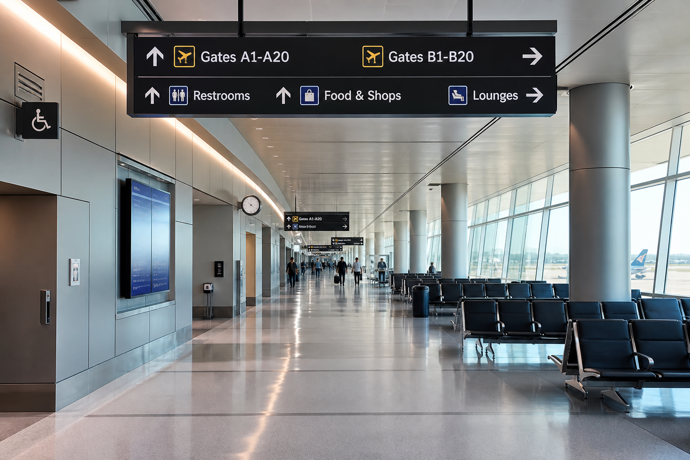
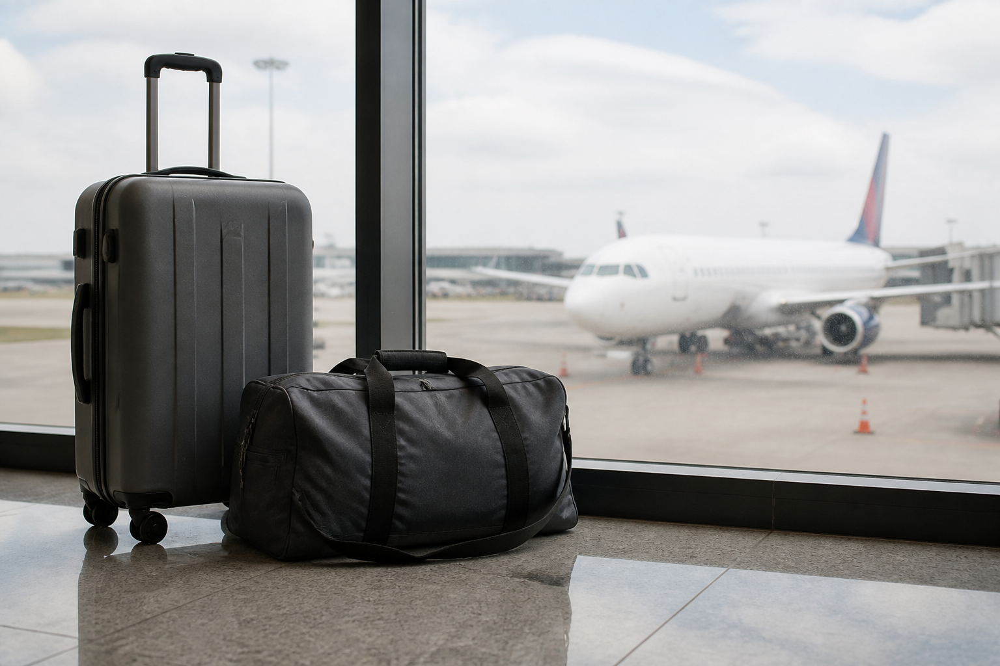

Makaleler
Uçuş tazminatı rehberleri
Yurt dışı – Türkiye arası uçuşlarda gecikme, iptal, uçağa alınmama ve bagaj konularında yolcu haklarını anlatan yazılar. THY, Pegasus, SunExpress ve uluslararası havayolu uçuşları için genel bilgi; kişisel dosyanız için platforma başvurmanız yeterlidir.
Popüler dış hat rotaları
Kısa rota rehberleri: yurt dışı uçuş tazminatı ve dış hat rötar tazminatı için İstanbul–Avrupa (Roma, Barselona, Viyana, Münih, Milano, Atina, Zürih, Brüksel), Antalya tatil hatları, Körfez ve dönüş uçuşları.

İstanbul–Zürih dış hat tazminatı
17 Eylül 2026İstanbul–Atina gecikme tazminatı
16 Eylül 2026İstanbul–Milano dış hat tazminatı
15 Eylül 2026İstanbul–Münih gecikme tazminatı
14 Eylül 2026İstanbul–Viyana dış hat tazminatı
13 Eylül 2026İstanbul–Barselona gecikme tazminatı
12 Eylül 2026İstanbul–Roma dış hat tazminatı
11 Eylül 2026İstanbul–Frankfurt gecikme ve iptal tazminatı
10 Eylül 2026İstanbul–Amsterdam dış hat tazminatı
9 Eylül 2026İstanbul–Londra gecikme tazminatı
8 Eylül 2026İstanbul Paris gecikme tazminatı
7 Eylül 2026Antalya–Avrupa tatil sezonu tazminatı
6 Eylül 2026Türkiye–Dubai ve Doha uçuş tazminatı
5 Eylül 2026Almanya'dan İstanbul'a iptal edilen uçuş
4 Eylül 2026Genel uçuş rehberleri
Uçuş 3 saat gecikirse tazminat haklarım neler?
2 Eylül 2026Uçuş iptal edilirse yolcu haklarım neler?
28 Ağustos 2026Biletiniz varken uçağa alınmazsanız haklarım neler?
21 Ağustos 2026